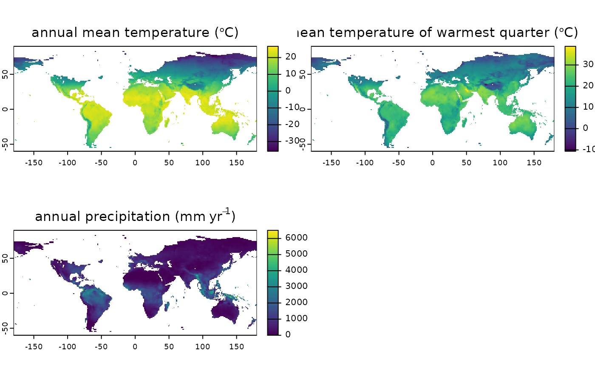

Generate pretty labels (in the form of an expression) that can be used for plotting
Arguments
- x
either a character vector with the names of the variables, or a
terra::SpatRastergenerated with [region_slice())][region_slice())]: R:region_slice())
- dataset
string defining dataset to be downloaded (a list of possible values can be obtained with
list_available_datasets()). This function will not work on custom datasets.- with_units
boolean defining whether the label should include units
- abbreviated
boolean defining whether the label should use abbreviations for the variable
Value
a expression that can be used as a label in plots
Examples
var_labels("bio01", dataset = "Example")
#> expression("annual mean temperature (" * degree * C * ")")
# set the data_path for this example to run on CRAN
# users don't need to run this line
set_data_path(on_CRAN = TRUE)
#> [1] TRUE
# for a SpatRaster
climate_20k <- region_slice(
time_bp = -20000,
bio_variables = c("bio01", "bio10", "bio12"),
dataset = "Example"
)
terra::plot(climate_20k, main = var_labels(climate_20k, dataset = "Example"))

terra::plot(climate_20k, main = var_labels(climate_20k,
dataset = "Example",
abbreviated = TRUE
))